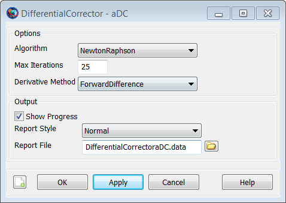
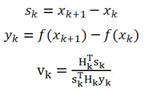

DifferentialCorrector
DifferentialCorrector — A numerical solver
Description
A DifferentialCorrector (DC) is a numerical solver for solving boundary value problems. It is used to refine a set of variable parameters in order to meet a set of goals defined for the modeled mission. The DC in GMAT supports several numerical techniques. In the mission sequence, you use the DifferentialCorrector resource in a Target control sequence to solve the boundary value problem. In GMAT, differential correctors are often used to determine the maneuver components required to achieve desired orbital conditions, say, B-plane conditions at a planetary flyby.
You must create and configure a DifferentialCorrector resource for your application by setting numerical properties of the solver such as the algorithm type, the maximum number of allowed iterations and choice of derivative method used to calculate the finite differences. You can also select among different output options that show increasing levels of information for each differential corrector iteration.
This resource cannot be modified in the Mission Sequence.
Fields
| Field | Description | ||||||||||||
|---|---|---|---|---|---|---|---|---|---|---|---|---|---|
| Algorithm | The numerical method used to solve the boundary value problem.
| ||||||||||||
| DerivativeMethod | Chooses between one-sided and central differencing for numerically determining the derivative. Only used when Algorithm is set to NewtonRaphson.
| ||||||||||||
| MaximumIterations | Sets the maximum number of nominal passes the DifferentialCorrector is allowed to take during the attempt to find a solution. If the maximum iterations is reached, GMAT exits the target loop and continues to the next command in the mission sequence. In this case, the objects retain their states as of the last nominal pass through the targeting loop.
| ||||||||||||
| ReportFile | Specifies the path and file name for the DifferentialCorrector report. The report is only generated if ShowProgress is set to true.
| ||||||||||||
| ReportStyle | Controls the amount and type of information written to the file defined in the ReportFile field. Currently, the Normal and Concise options contain the same information: the Jacobian, the inverse of the Jacobian, the current values of the control variables, and achieved and desired values of the constraints. Verbose contains values of the perturbation variables in addition to the data for Normal and Concise. Debug contains detailed script snippets at each iteration for objects that have control variables.
| ||||||||||||
| ShowProgress | When the ShowProgress field is set to true, then data illustrating the progress of the differential correction process are written to the message window and the ReportFile. The message window is updated with information on the current control variable values and the contraint variances. When the ShowProgress field is set to false, no information on the progress of the differential correction process is displayed to the message window or written to the ReportFile.
|
GUI
The DifferentialCorrector dialog box allows you to specify properties of a DifferentialCorrector such as the numerical algorithm, maximum iterations, choice of derivative method used to calculate the finite differences, and choice of reporting options.
To create a DifferentialCorrector resource, navigate to the Resources tree, expand the Solvers folder, right-click on the Boundary Value Solvers folder, point to Add, and click DifferentialCorrector. A resource named DC1 will be created. Double-click on the DC1 resource to bring up the following Differential Corrector dialog box.
|  |
Remarks
Supported Algorithm Details
GMAT supports several algorithms for solving boundary value problems including Newton Raphson, Broyden, and Modified Broyden. These algorithms use finite differencing or other numerical approximations to compute the Jacobian of the constraints and independent variables. The default algorithm is currently NewtonRaphson. Brodyen’s method and ModifiedBroyden usually take more iterations but fewer function evaluations than NewtonRaphson and so are often faster. A description of each algorithm is provided below. We recommend trying different algorithm options for your application to determine which algorithm provides the best balance of performance and robustness.
Newton-Raphson
The NewtonRaphson algorithm is a quasi-Newton method that computes the Jacobian using finite differencing. GMAT supports forward, central, and backward differencing to compute the Jacobian.
Broyden
Broyden’s method uses the slope between state iterations as an approximation of the first derivative instead of numerically calculating the first derivative using finite differencing. This results in substantially fewer function evaluations. The Broyden iterate is updated using the following equation.
 |
ModifiedBroyden
The modified Broyden’s method updates the inverse of the Jacobian matrix to avoid numerical issues in matrix inversion when solving near singular problems. Like Broyden’s method, it requires fewer function evaluations than the NewtonRaphson algorithm. The inverse of the Jacobian, H, is updated using the following equation,
 |
where
|  |
Examples
Create a DifferentialCorrector configured to use Broyden's method and use it to solve for an apogee raising maneuver.
Create Spacecraft aSat
Create Propagator aProp
Create ImpulsiveBurn aDeltaV
Create OrbitView a3DPlot
a3DPlot.Add = {aSat,Earth};
Create DifferentialCorrector aDC
aDC.Algorithm = 'Broyden'
BeginMissionSequence
Propagate aProp(aSat){aSat.Periapsis}
Target aDC
Vary aDC(aDeltaV.Element1 = 0.01)
Maneuver aDeltaV(aSat)
Propagate aProp(aSat){aSat.Apoapsis}
Achieve aDC(aSat.RMAG = 12000)
EndTarget To see further examples for how the DifferentialCorrector object is used in conjunction with Target, Vary, and Achieve commands to solve orbit problems, see the Target command examples.